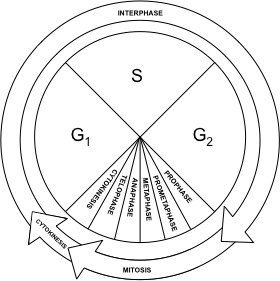

<!DOCTYPE html>
<html lang="en"></html> 

    <head>
        <meta charset="UTF-8">
        <meta name="viewport" content="width=device-width, initial-scale=1.0">
        <title>The Cell Cycle</title>
        <link href="index.css" rel="stylesheet" type="text/css">
    </head>
<!--              -->
    <body>
        <span id="links">    
            <ul>
                <li><a href="index.html">Home</a></li>
                <li><a href="cellCycle.html">Cell Cycle</a></li>
                <li><a href="mitosis.html">Mitosis</a></li>
                <li><a href="meiosis.html">Meiosis</a></li>
                <li style="float: right;"><a href="https://www.cdc.gov/coronavirus/2019-ncov/prevent-getting-sick/prevention.html">About COVID-19</a></li>
            </ul>
        </span>
<br>
    <!--             -->
        <span id="page">
            <h1><center>~ The Cell Cycle ~</center></h1>
            <p>
                The cell cycle is the process in which the cells of an organism multiply. 
                This function has many purposes like growth, reproduction, repair the organism...
                It is divided in many phases: Interphase(G1, S phase or synthesis phase, G2) and Mitosis.
            </p>
            
            <h2 style="text-decoration: underline;">G1 phase</h1>
            <p>
                Most of the cell's growth is done in G1. 
                The cell synthesizes new proteins and organelles and prepares 
                for S phase
            </p>
<br>
            <h2 style="text-decoration: underline;">S phase</h2>
            <p>
                In S (synthesis) phase, the DNA located in the nucleus of the cell is being replicated 
                so it could be shared between the 2 daughter cells later on.
            </p>
<br>
            <h2 style="text-decoration: underline;">G2</h2>
            <p>
                G2 is is considered the shortest during interphase. 
                The organelles required for the cellular division are produced during this phase.
                Then, the cell is ready for Mitosis.
            </p>
<br>
            <h2 style="text-decoration: underline;">Mitosis</h2>
            <p>
                Mitosis is the most interesting part of the cell cycle.
                In this phase, the cell's organelles divide to be separated in 2 groups
                destined to be each in one of the resulting cells.
            </p>
        </span>

    </body>

</html>
